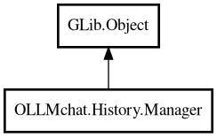

Manager
Object Hierarchy:

Description:
public class Manager : Object
Manager for chat history persistence.
Handles saving and loading chat sessions to/from disk and SQLite database. Manages the history directory structure and provides methods
for session management. Creates new clients for each session while sharing tools and configuration.
Example
var manager = new History.Manager(history_dir, db, base_client, config);
// Create new session
var session = yield manager.new_session();
// Get client for this session (shares tools/config)
var client = manager.session.client;
// Switch to existing session
yield manager.switch_to_session(existing_session);
// Save current session
yield manager.save_session();
Content:
Properties:
Creation methods:
Methods:
- public Session create_new_session ()
Creates a new session for a new chat. Uses the current session's
agent_name and model if available, otherwise defaults to "just-ask".
- public void load_sessions ()
Load all chat sessions from SQLite database and store in manager.
Sessions are loaded as SessionPlaceholder instances until load() is called.
- public Client new_client (Client? copy_from = null)
Creates a new client instance.
- public async void switch_to_session (SessionBase session) throws Error
Switches to a new session, deactivating the current one and activating
the new one.
Signals:
Inherited Members:
All known members inherited from class GLib.Object
- @get
- @new
- @ref
- @set
- add_toggle_ref
- add_weak_pointer
- bind_property
- connect
- constructed
- disconnect
- dispose
- dup_data
- dup_qdata
- force_floating
- freeze_notify
- get_class
- get_data
- get_property
- get_qdata
- get_type
- getv
- interface_find_property
- interface_install_property
- interface_list_properties
- is_floating
- new_valist
- new_with_properties
- newv
- notify
- notify_property
- ref_count
- ref_sink
- remove_toggle_ref
- remove_weak_pointer
- replace_data
- replace_qdata
- set_data
- set_data_full
- set_property
- set_qdata
- set_qdata_full
- set_valist
- setv
- steal_data
- steal_qdata
- thaw_notify
- unref
- watch_closure
- weak_ref
- weak_unref